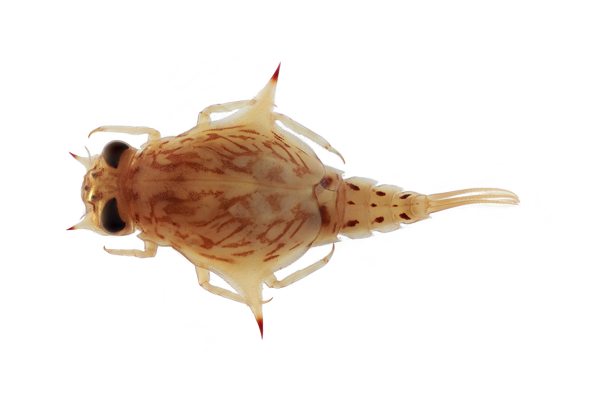
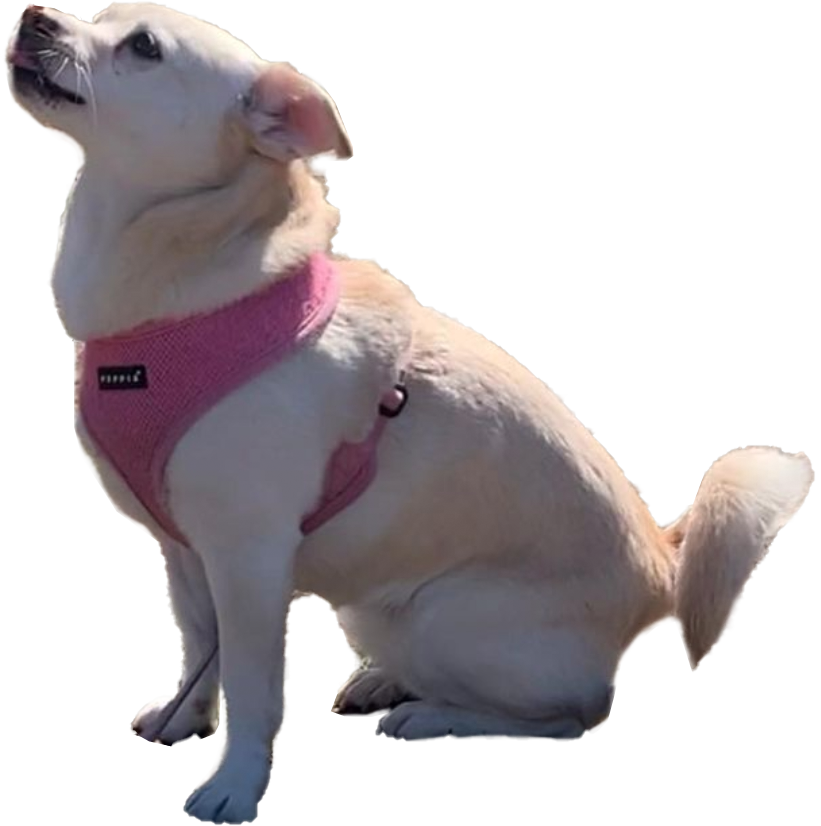

Alice [慈安] Fang
Interaction designs. Graphic designs. Codes sometimes. Loves calendars, museums, internet archives, sudoku, and collecting books but not always reading them.
Currently, a graphics/multimedia editor on the digital news design team [1] at The New York Times. She designs, art directs, edits, and develops visual stories on the web [2].
Sometimes she works on other things:
- A little plant photo zine 🌱
- The beginnings of a studio with Jac Saik [3]
- Custom CSS for the bestie’s e-commerce site, ninatang [dot] com
Reach out at alicecfang [at] gmail [dot] com to chat about bugs, clouds [4], or the internet.

